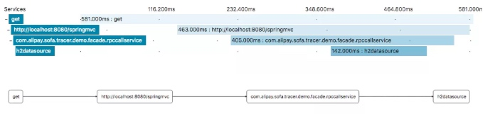
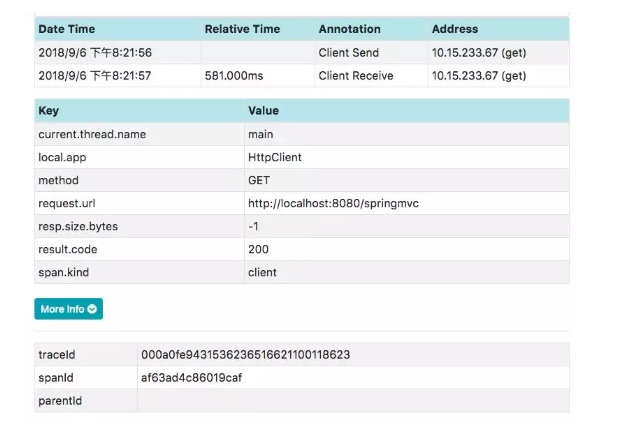
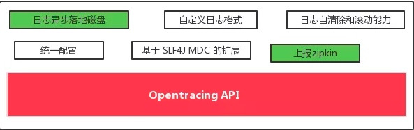
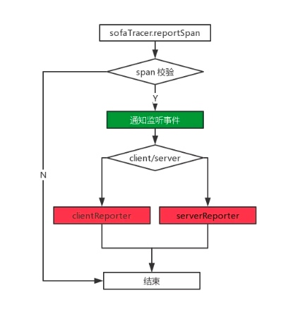
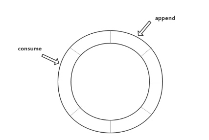
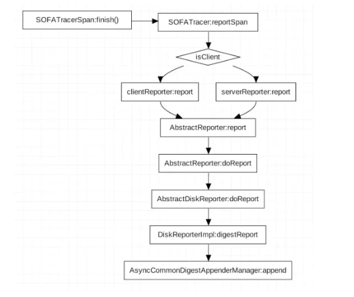
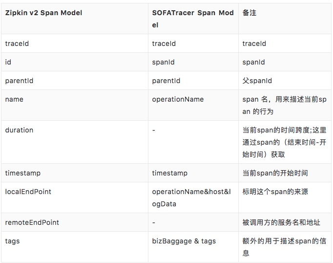
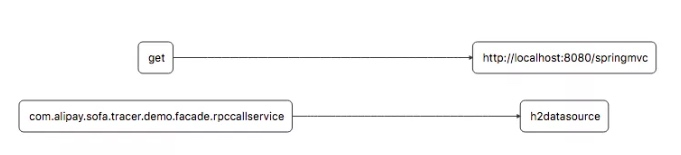
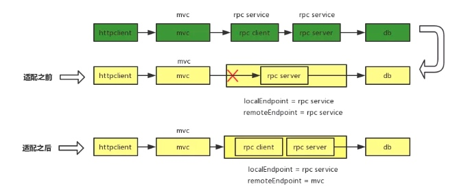
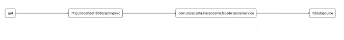

SOFA 中间件是蚂蚁金服自主研发的金融级分布式中间件，包含了构建金融级云原生架构所需的各个组件，包括微服务研发框架，RPC 框架，服务注册中心，分布式定时任务，限流/熔断框架，动态配置推送，分布式链路追踪，Metrics 监控度量，分布式高可用消息队列，分布式事务框架，分布式数据库代理层等组件，是在金融场景里锤炼出来的最佳实践。
SOFATracer 是一个用于分布式系统调用跟踪的组件，通过统一的 TraceId 将调用链路中的各种网络调用情况以日志的方式记录下来或者上报到 Zipkin，以达到透视化网络调用的目的，这些链路数据可用于故障的快速发现，服务治理等。
SOFATracer 是一个用于分布式系统调用跟踪的组件，通过统一的 traceId 将调用链路中的各种网络调用情况以日志的方式记录下来或者上报到 做 Zipkin，以达到透视化网络调用的目的。这种以日志的方式记录下来或者上报到 Zipkin 通常称为 Report，即数据上报 SOFATracer 的数据上报是在遵循 OpenTracing 规范基础上扩展出来的能力，OpenTracing 规范本身只是约定了数据模型和行为。本文主要目的在于分析 SOFATracer 的数据上报功能部分，主要内容如下：
1. 基于 OpenTracing 规范的分布式链路跟踪解决方案
2. SOFATracer Report 数据上报模型
3. SOFATracer 和 Zipkin 模型转换原理
基于 OpenTracing 规范的分布式链路跟踪解决方案
OpenTracing 是一个轻量级的标准化层，它位于应用程序/类库和追踪或日志分析程序之间。为了解决不同的分布式追踪系统 API 不兼容的问题，OpenTracing 提供了一套平台无关、厂商无关的 API，同时也提供了统一的概念和数据标准。关于对 OpenTracing 标准的版本化描述可以参考 https://github.com/opentracing/specification/blob/master/specification.md。一些具体的概念下面将结合 SOFATracer 的实现来一一说明。
目前基于 OpenTracing 规范实现的链路跟踪组件有 Jaeger，Appdash，Apache SkyWalking ，Datadog 等。像谷歌的 StackDriver Tracer 实际上并不是遵循 OpenTracing 规范的，但是都源自于 Dapper 这篇论文。
规范其实就是对模型和行为的约束，在 OpenTracing 规范中有三种关键和相互关联的模型：Tracer、Span 和SpanContext，并且在规范中对于每个模型的行为也做了约定。
Tracer
Tracer 可以被认为是一个由多个 Span 组成的有向无环图。一个 Tracer 可以用来描述一个请求从发出到收到响应整个链路过程。前提是需要在适当的地方进行埋点。下图就是一条完整的链路的展示：

在 SOFATracer 中 ，SOFATracer 实现了 Tracer 接口，实现了构建 span，数据载入（Inject）和 数据提取（Extract ) 的能力。
- Start a new Span ：创建一个新的 Span 。通过指定的 operationName 来创建一个新的 Span。operationName 表示由 Span 完成的具体的工作 ( 例如，RPC 方法名称、函数名称或一个较大的计算任务中的阶段的名称)。
- Inject a SpanContext：将 SpanContext 注入到给定类型的 “carrier” 中，用于进行跨进程的传输。
- Extract a SpanContext ：从载体中提取中 spanContext 实例对象。这个过程是注入的逆过程。spanContext 中包括了贯穿整个链路的 traceId ，变化的 spanId ，父 spanId 以及透传数据等。
span
一个 span 代表系统中具有开始时间和执行时长的逻辑运行单元。span 之间通过嵌套或者顺序排列建立逻辑因果关系，然后再通过这种关系来构建整个调用链路（Tracer）。

OpenTracing 规范 API 约定 Span 的模型如下（实际上就是 Span 接口中对应的方法，需要由遵循该规范的实现者必须提供的最小能力的集合）：
- Get the Span's SpanContext： 通过 Span 获取 SpanContext （即使 span 已经结束，或者即将结束）
- Finish：结束一个 Span 。Finish 必须是 span 实例的最后一个被调用的方法。但是在主线程处理失败或者其他程序错误发生时，Finish 方法可能不会被调用。在这种情况下，实现者应该明确的记录 Span，保证数据的持久化（这一点 SOFATracer 其实是没有做的）。
- Set a K:V tag on the Span：为 Span 设置 tag 。tag 的 key 必须是 string 类型；value 必须是 string、boolean 或数字类型。通常会使用 Tag 来记录跟踪系统感兴趣的一些指标数据。
- Add a new log event：为 Span 增加一个 log 事件，用于记录 Span 生命周期中发生的事件。
- Set a Baggage item： 设置一个 string:string 类型的键值对，一般是业务数据在全链路数据透明传输，存储在 SpanContext 中。
- Get a Baggage item： 通过 key 获取 Baggage 中的元素。
spanContext
Span 上下文，几乎包含了需要在链路中传递的全部信息。另外，Span 间 References 就是通过 SpanContext 来建立关系的。根据 OpenTracing 规范要求，SpanContext 是不可变的，目的是防止由于 Span 的结束和相互关系，造成的复杂生命周期问题。
SpanContext 表示必须传播到后代 Spans 和跨进程边界的 Span 状态。SpanContext 在逻辑上分为两部分：
- 跨 Span 边界传播的用户级 “Baggage”
- 识别或以其他方式关联 Span 实例所需的任何 Tracer 实现特定字段（例如，trace_id，span_id，sampling，元组）
Opentracing 中 SpanContext 接口中只有一个 baggageItems 方法，通过这个方法来遍历所有的 baggage 元素。
public interface SpanContext {
Iterable<Map.Entry<String, String>> baggageItems();
}
SOFATracer扩展的能力
上面简单介绍了 OpenTracing 规范 API 对于 Tracer、Span、SpanContext 三个核心模型的规范定义。下面来看下 SOFATracer 是如何遵循规范并做扩展的。

在 OpenTracing 规范 基础上，SOFATracer 提供了实现，并在规范基础上提供了扩展功能。本文主要介绍上图中标绿色的部分，即数据上报功能。
SOFATracer 中提供了 Report 接口，然后基于此接口扩展了两个实现：
- 第一种 Report 扩展是基于 Disruptor：https://github.com/LMAX-Exchange/disruptor，高性能无锁循环队列的异步落地磁盘的日志打印
- 第二种 Report 扩展是提供远程上报，能够将 SOFATracer 的链路数据模型汇报到 Zipkin 中做调用链路的展示
当然，SOFATracer 也允许用户自定义上报功能，只需要在自己的工程代码中实现 Report 接口即可，下面是 Report 接口的定义：
public interface Reporter {
// 上报到远程服务器的持久化类型
String REMOTE_REPORTER = "REMOTE_REPORTER";
// 组合类型
String COMPOSITE_REPORTER = "COMPOSITE_REPORTER";
// 获取 Reporter 实例类型
String getReporterType();
// 上报 span
void report(SofaTracerSpan span);
// 关闭上报 span 的能力
void close();
}
SOFATracer Report 数据上报模型
上面提到 SOFATracer 的 Report 有两种机制，一种是落到磁盘，另外一种是上报到 Zipkin 。SOFATracer 中这两种方案并不是二选一的，而是可以同时使用多个实现。
例如，我们希望上报数据到 Zipkin ，先引入 tracer-sofa-boot-starter 这个依赖，并进行相关 Zipkin 的配置之后就可以将链路数据上报到 Zipkin，如果没有引入依赖则不会上报。
本节来分析下 SOFATracer 上报数据过程的具体逻辑。

上面这张图描述了数据上报的几种方式：
- 绿色部分，上报 Zipkin：这里其实就是实现上报 Zipkin 的一个回调，当进行 reportSpan 操作时，会执行一个invokeReportListeners ，这个方法就是通知所有实现了 SpanReportListener 接口的类执行回调方法，然后在这个回调方法中将 span 数据上报到 Zipkin 。
- 红色部分，输出到磁盘：SOFATracer 为了提供更好的扩展能力，将输出日志的 Report 细分为 client 和 server 两种；并在 Tracer 基类中提供 generateClientStatReporter 和 generateServerStatReporter 两个抽象方法，供不同的组件自己来实现一些特殊化的定制。
关于何时进行上报，其实这个在 Opentracing API 的规范中已经给出了明确的时机。在上面的介绍中提到，“Finish必须是 span 实例的最后一个被调用的方法”，当 finish 方法被调用时也就意味着一个 span 生命周期的结束，为了保证 span 数据的完整性和正确性，SOFATracer reportSpan 的逻辑就是在 finish 方法被调用时触发执行。
数据落地磁盘
SOFATracer 日志落盘是基于 Disruptor 高性能无锁循环队列实现的，提供了异步打印日志到本地磁盘的能力。

append : 追溯 Report，无论是 clientReport 还是 serverReport ，底层均依赖 DiskReporterImpl 的实现。DiskReporterImpl 是 SOFATracer 统筹处理日志落盘的类。clientReport 和 serverReport 的最终调用都会走到DiskReporterImpl 中的 digestReport 这个方法。digestReport 中会将当前 span append 到环形缓冲队列中，append 操作就是发布一个事件的过程。
consume : consume 是 Disruptor 中的对应的消费模型；SOFATracer 中这个消费者就是将 SofaTracerSpan 中的数据写到日志文件中的。
**事件发布过程：
**

数据上报 Zipkin
前面提到，上报 Zipkin 的是通过 onSpanReport 这个回调函数完成的。tracer-sofa-boot-starter 这个依赖中提供了 SpanReportListener 接口实现 ZipkinSofaTracerSpanRemoteReporter 。而在 onSpanReport 这个回调函数中，又将具体上报委托给了 AsyncReporter 来处理。
@Override
public void onSpanReport(SofaTracerSpan span) {
if (span == null) {
return;
}
//convert
Span zipkinSpan = convertToZipkinSpan(span);
this.delegate.report(zipkinSpan);
}
构建 AsyncReporter 对象需要两个参数：
- sender： 数据发送器，SOFATracer 中，sender 的是通过 RestTemplate 以 http 方式 来与 Zipkin 进行通信传输的。
- url：Zipkin 默认的 Collector 使用 http 协议里收集 Trace 信息，客户端调用 /api/v1/spans 或 /api/v2/spans 来上报 tracer 信息。这里我们使用的是 Zipkin V2 的 API。
AsyncReporter 中实际构建的是 BoundedAsyncReporter 对象 ， 并且在构建一个异步报告器是，会根据 messageTimeoutNanos 是否大于 0 来决定是否起一个守护线程 flushThread；flushThread 作用是一直循环调用 BoundedAsyncReporter 的 flush 方法，将内存中的 Span 信息上报给 Zipkin。具体细节这里不展开分析。
SOFATracer 和 Zipkin 模型转换原理
在上小节中贴出的小段代码中，除了构建 delegate 对象用于执行上报外；另一个关键就是 SOFATracer 的 Span 模型转换成 Zipkin Span 模型。SOFATracer 从 2.2.0 版本之后支持 Zipkin v2 的模型 ，对于 Zipkin v1 的模型不在提供支持。
下面是 zipkin GitHub 上提供的 Zipkin v2 的模型的结构化数据 Demo。
关于 Zipkin 的 Span 模型支持可以查看 ：https://github.com/openzipkin/zipkin/issues/1499
{
"kind": "CLIENT",
"traceId": "5af7183fb1d4cf5f",
"parentId": "6b221d5bc9e6496c",
"id": "352bff9a74ca9ad2",
"name": "query",
"timestamp": 1461750040359000,
"duration": 5000,
"localEndpoint": {
"serviceName": "zipkin-server",
"ipv4": "172.19.0.3",
"port": 9411
},
"remoteEndpoint": {
"serviceName": "mysql",
"ipv4": "172.19.0.2",
"port": 3306
},
"tags": {
"jdbc.query": "//....discard"
}
}
Zipkin v2 的模型结构较为简洁，整体看起来并没有什么繁重，这种对于使用者来说是很友好的，方便理解。其实在 Zipkin v1 模型时，其整个模型也是比较复杂的，Zipkin 社区对于 Zipkin 数据模型的变更也有讨论https://github.com/openzipkin/zipkin/issues/939.
像现在 v2 模型中的 tags，替换了原本 v1 中的 binaryAnnotations，binaryAnnotations 的存在是 v1 模型复杂的重要原因。详见去除原因:https://github.com/openzipkin/zipkin/releases/tag/2.10.1
SOFATracerSpan 模型
SOFATracerSpan 是基于 Opentracing 标准来的。但是 Opentracing 标准并没有规定一个 Span 模型必须有哪些属性。所以各个基于该标准的产品在于 Span 的模型上是不统一的，大多会基于其本身产生的场景带有一些特殊的属性。
{
"client":true,
"server":false,
"durationMicroseconds":775,
"endTime":1536288243446,
"logType":"httpclient-digest.log",
"operationName":"GET",
"logs":[
// ... ],
"sofaTracer":{
"clientReporter":{},
"tracerTags":{},
"tracerType":"httpclient"
},
"sofaTracerSpanContext":{
// sofaTracerSpanContext info },
"spanReferences":[],
"startTime":1536288242671,
"tagsWithBool":{},
"tagsWithNumber":{},
"tagsWithStr":{},
"thisAsParentWhenExceedLayer":{}
}
SOFATracer 的 Span 模型相较于 Opentracing 规范模型和 Zipkin v2 的模型来说，记录的数据信息更加丰富，且在 Opentracing 规范的基础上扩展了一套自己的 API，可以让使用者能够更加方便的在自己的代码中来获取链路中的信息；在日志中展示更多的 span 信息，能够帮助我们去了解一些调用细节，在发生问题时，也提供了更多排查问题的依据信息。
模型转换对照
为了使得 SOFATracer 的数据能够被 Zipkin 解析，需要将 SOFATracer 的 Span 模型转换成 Zipkin v2 的数据模型。

traceId 和 spanId 处理
Zipkin 在自己的模型里做了很多特殊的处理。比如 traceId 需满足16 或者 32 位，长度不够的会高位补 0；所以在使用 SOFATracer 时，日志中的 traceId 和上报到 Zipkin 的 traceId 长度不一致是合理的。
关于 spanId，我们期望在 Zipkin 中展示是以（0.1,0.1.1,...）这种形式来描述，能够直观的看到 span 之间的依赖关系。但是目前使用的 Zipkin 模型并不能满足我们的需求，主要原因在于虽然 Zipkin 在 v2 模型中虽然支持 string 类型的 id ，但是其长度限制是 16 位，对于 SOFATracer 来说，如果存在较长的链路调用，会导致层次丢失。
另外，如果上报 Zipkin 的 span 的 parentId 为 0，那么 Zipkin 将会不进行设置；而 SOFATracer 的第一个 span 的 id 就是从 0 开始的，所以会导致链路构建失败，如果我们尝试通过改变起始 id 来改变，会对整个模型产生影响。经过验证测试，我们最终采用的方案是使用冲突较小的 FNV64 Hash 算法将 String 类型转换成 long 型来描述我们的 spanId。
SOFARPC 上报的数据处理
在整个模型转换中，比较核心的就是如何兼容 SOFARPC 上报的数据。Zipkin 在构建链路数时，其基本的模型是 client-server-client-server-.. 这种模式；不会出现 a server calling a server 这种情况，也就是带有kind = server 的 span 的 父span 应该是 kind = client。
SOFARPC 对于一个 rpc span 上报了两个 span 信息，这两个 span 除了 kind 类型不同之外，其他的信息是一样的。当数据上报给 Zipkin 之后，Zipkin 通过自己的算法来构建依赖树时，会对上报的 SOFARPC 数据处理有问题。下图是没有适配 SOFARPC 生成的链路：

这里可以看出，从 mvc 到 rpc 之间的关系被‘切断’了。
造成上述问题的原因在于，SOFATracer 上报数据到 Zipkin 时，在 v2 模型中，Zipkin 会通过广度优先遍历来构建依赖树，实际上在展示 services 或者 dependencies 时，Zipkin ui 中的展示会依赖 endpiont 中的 serviceName ；两个条件：
- SOFARPC 的 span 有两个（client&server），但是这两个 span 具有相同的 spanId 和 parentId，span.kind 不同。
- Zipkin 在构建依赖树时，依赖于 endpiont 中的 serviceName。该 servieName 依赖于 idToNode（Node.TreeBuilder 中的属性，Map 结构，映射关系为 spanId -> span）。
Node<V> previous = idToNode.put(id, node);
if (previous != null)
node.setValue(mergeFunction.merge(previous.value, node.value));
这里当前 node 为 rpc server 类型时，previous 返回结果不为 null，会执行 merge 操作，该 merge 操作的核心就是设置当前 rpc node 的 remoteEndpoint，值为 rpc client 的 localEndpoint。
这里当前 node 为 rpc server 类型时，previous 返回结果不为 null，会执行 merge 操作，该 merge 操作的核心就是设置当前 rpc node 的 remoteEndpoint，值为 rpc client 的 localEndpoint。
这样会有一个问题，就是 RPC 的 client 和 server Span 在 Zipkin 模型中的会被合并成一个 span；这样就会导致 server -> server 的情况，与 Zipkin 的 client -> server 链路模型有冲突。如下图（绿色为SOFATracer span，黄色为 Zipkin span）：

通过分析 zipkin 的构建过程，适配 SOFARPC 上报数据时，SOFARPC server span 的 remoteEndpoint 不能依赖 SOFARPC client span 的 localEndpoint，而应该依赖 SOFARPC client parentSpan 的 localEndpoint。下图为 SOFARPC 适配之后的依赖关系图：

总结
本文从 OpenTracing 规范说起，对 OpenTracing 规范中的模型和行为进行了简单的描述。结合 OpenTracing 规范，介绍了蚂蚁金服 SOFATracer 分布式链路跟踪的模型实现。在此基础上，对 SOFATracer 的数据上报功能进行了详细的分析，包括基于 disruptor 实现的异步日志落盘和上报数据到 Zipkin。最后对 SOFATracer 和 Zipkin 模型转换原理进行了说明，并对 SOFARPC 模型数据的上报处理进行了解析。
- SOFATracer GitHub : https://github.com/alipay/sofa-tracer
- Zipkin 官网 ： https://zipkin.io/
- Zipkin GitHub : https://github.com/openzipkin/zipkin
- opentracing 规范 : http://opentracing.io/documentation/pages/spec.html
- opentracing 官网 : http://opentracing.io/
- disruptor : https://github.com/LMAX-Exchange/disruptor